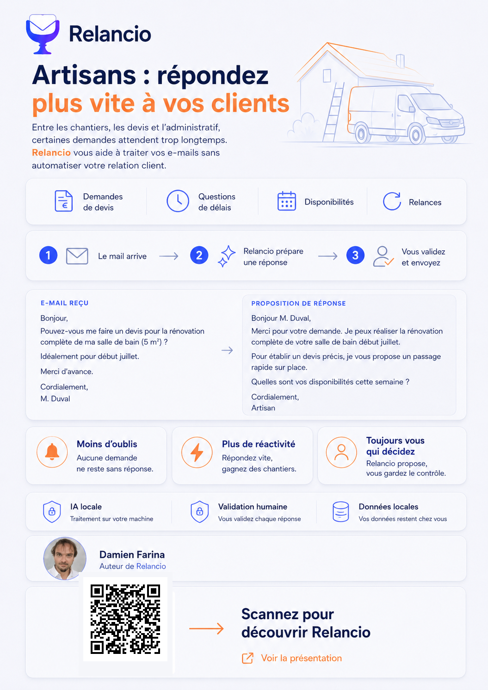

Key takeaway
Relancio can help users reply faster without automating the customer relationship. The user remains in control of every message sent.
Relancio
A simple visual resource to present the Relancio concept to artisans and explain the principle in just a few seconds.
This kits focus on practical day-to-day use cases: quote requests, timeline questions, availability and follow-ups. Relancio prepares a suggested reply, then the artisan reviews, edits and sends it manually.
The QR code links to the online presentation. For reliable scanning, open the image in full size if needed.

Relancio can help users reply faster without automating the customer relationship. The user remains in control of every message sent.
This visual can be shared online, displayed from a screen or included in a presentation. The QR code provides access to the guide and project information.